Niles is three this
year I made it out to the parents'
place to get on
Niles and Miaren for the
first time. Niles, being
so laid back, has gotten
the short end of the stick a
lot of the time.
I'm worried about starting
Miaren, so he's been to my
place for a month at a time
a few times last year. During
that time he got introduced
to the bridle, saddle, lunging and
going out to the kennels.
Niles hasn't had any of that.
So, I didn't ask as much
from Niles today as Miaren, but
at least I'm getting started
with him now.
.
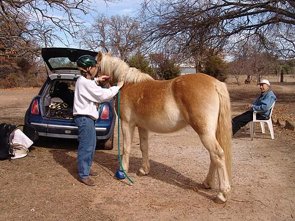
The parents sat and
watched, took pictures and helped out when needed.
Niles is more your typical
short and stout Haflinger. A bit more weight on him than I like, but there's
not much to do about that.
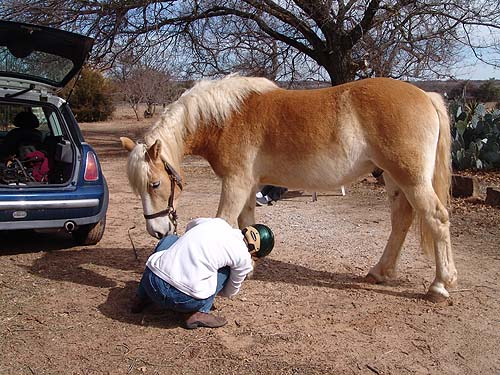
Checking on his foot.
He just can't seem to help pawing at things. The little boot helps keep
him from getting any more cuts.
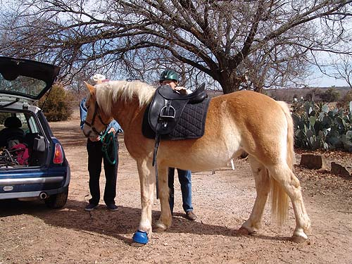
First time for a saddle.
Niles said 'Whatever...'.
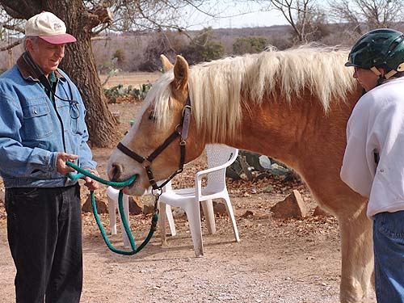
Always playing with
something. Last week I heard he took the tractor apart (although when I
asked him about it he blamed it on Miaren).
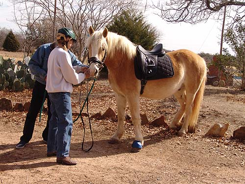
Not happy about the
bit, but not that troubled.
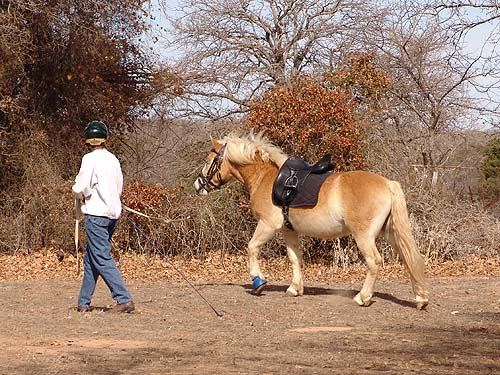
First time lunging.
He'd watched the other guys and knew what to do.
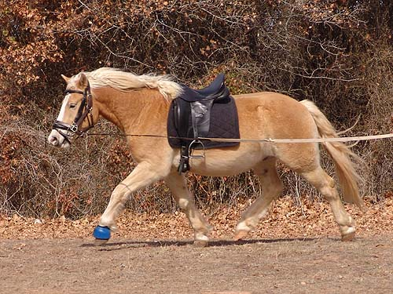
Showing me his lovely
movement.
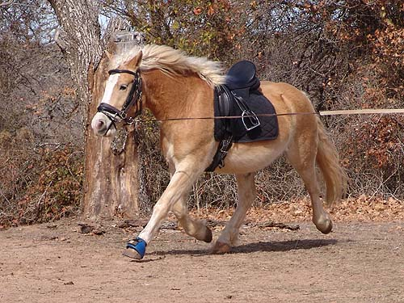
Good reach and not hollow.
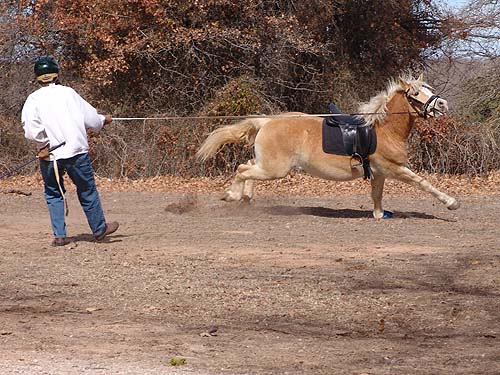
Then he decided to show
his silly side. Very cute to watch those short legs go so fast around the
circle. I couldn't tell if he just noticed the saddle, or if he wondered
what would happen if he did this.
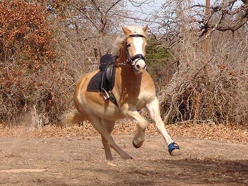
I told him big mistake.
Now I know he can canter on the lunge. He settled right back down, so I
don't think he was scared or panicked by anything. I let him settle into
a nice trot before I worked at getting him to give me a walk.
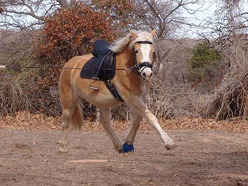
Back to the nice trot.
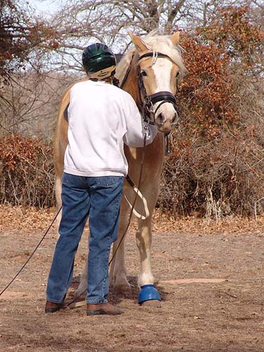
Giving him a pat before
we change directions.
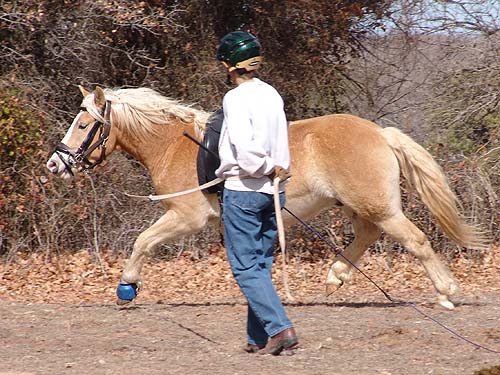
Then back the other
direction. Using my hip to not let him get away and holding the whip behind
me so he doesn't feel threatened.
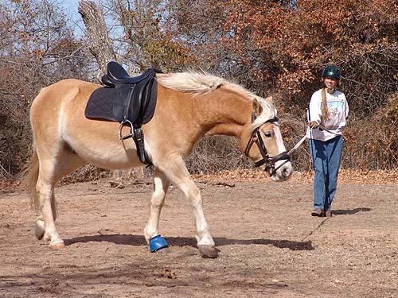
And finally a nice walk.
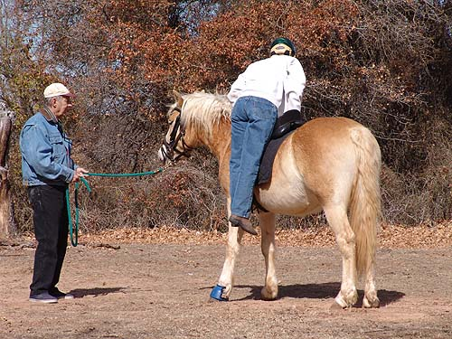
Weight on the saddle
and hopping off noisily a few times to see what happens.
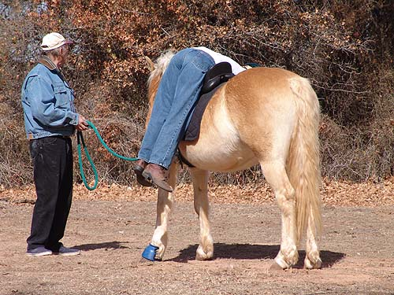
Then laying over and
saying hi from the other side. Notice my handler appears to be very alert.
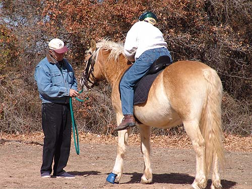
Finally swinging the
leg over and telling him what a good boy he is.